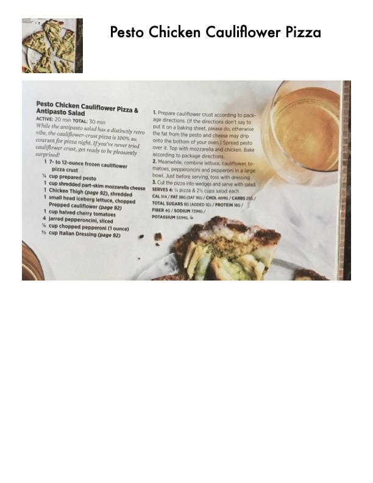

Pesto Chicken Cauliflower Pizza & Antipasto Salad

Original cookbook page 70
While the antipasto salad has a distinctly retro vibe, the cauliflower-crust pizza is 100% au courant for pizza night. If you've never tried cauliflower crust, get ready to be pleasantly surprised.
Total: 30 min
Ingredients
- 1 7- to 12-ounce frozen cauliflower pizza crust
- ⅓ cup prepared pesto
- 1 cup shredded part-skim mozzarella cheese
- 1 Chicken Thigh (page 92), shredded
- 1 small head iceberg lettuce, chopped
- Prepped cauliflower (page 92)
- 1 cup halved cherry tomatoes
- 1 jarred pepperoncini, sliced
- ½ cup chopped pepperoni (1 ounce)
- ⅓ cup Italian Dressing (page 92)
Instructions
- Prepare cauliflower crust according to package directions. (If the directions don't say to put it on a baking sheet, please do, otherwise the fat from the pesto and cheese may drip onto the bottom of your oven.) Spread pesto over it. Top with mozzarella and chicken. Bake according to package directions.
- Meanwhile, combine lettuce, cauliflower, tomatoes, pepperoncini and pepperoni in a large bowl. Just before serving, toss with dressing.
- Cut the pizza into wedges and serve with salad.
Recipe #70 from collection